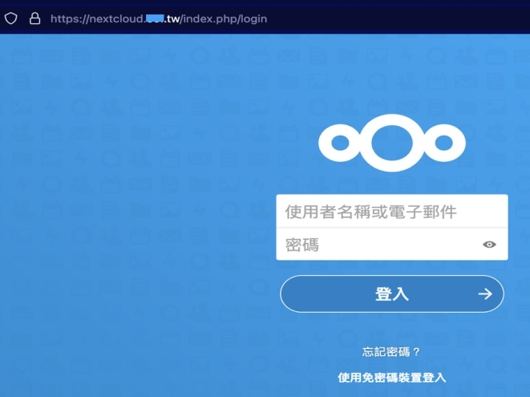
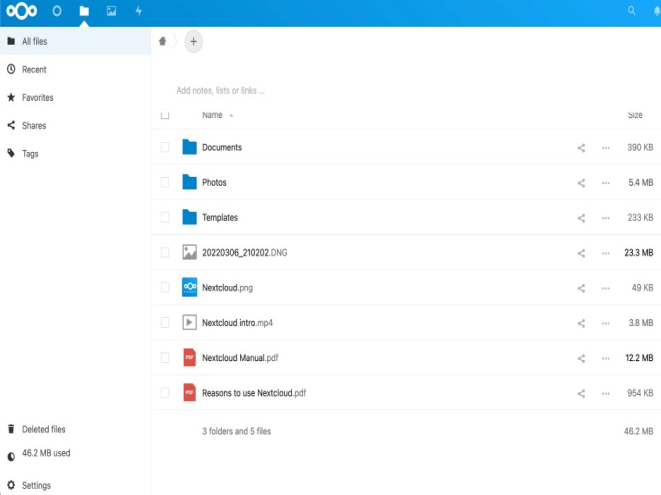
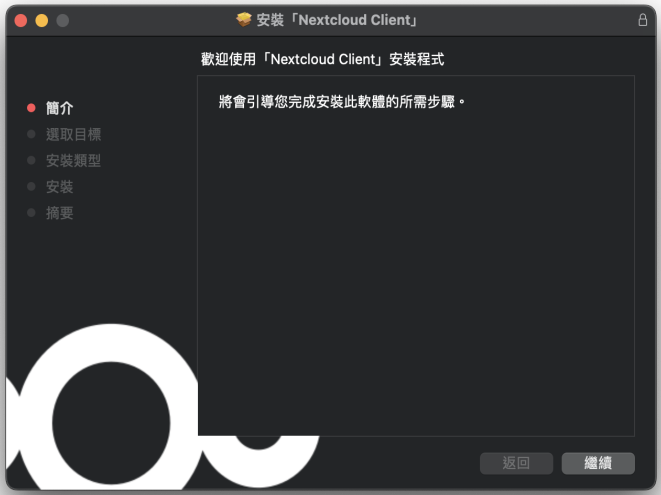
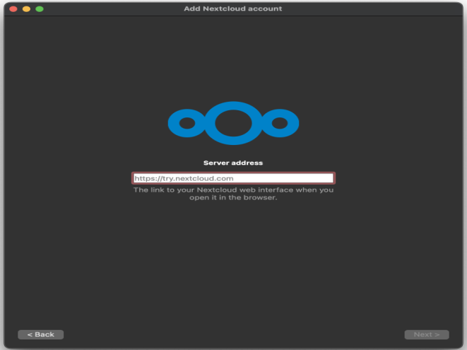

掌控你在雲端的資料：Nextcloud 儲存空間
身為現代人，雲端硬碟已經在日常與工作生活當中扮演舉足輕重的地位。雲端硬碟大幅提升我們在協作、分享檔案的便利，將檔案上傳到雲端硬碟，也是常見的備份選項之一。
舉凡 Google drive、Dropbox 或微軟 OneDrive，都提供個人在免費使用或各式組織的團體使用方案。幾乎所有的公民團體，也都會隨著辦公室內的溝通平台利用一種或多種雲端硬碟服務。
但是，前述雲端硬碟的便利其實建立在 Google 、 Dropbox、微軟這些科技公司在世界各地投資架設的伺服器。換句話說，我們每次上傳到這些服務的檔案，其實都同時儲存在不同地方的電腦硬碟當中。然而，絕大多數的使用者並不能得知自己的檔案究竟儲存在哪個國家、哪個倉庫、哪一台伺服器電腦的硬碟裡面。這對於處理敏感人權議題的公民團體而言，是至關重要的議題。更何況，這些商業公司都已經是駭客的攻擊目標，時有帳號資料外洩的新聞，或是有極權國家可能會直接使用司法程序扣押商業公司硬碟的可能（比較會發生的情境），不一定適合安放最重要的敏感資料。
Nextcloud 相對於前述的商業雲端硬碟服務，是以開放原始碼的軟體為基礎、由志工社群自下而上開發起來的雲端硬碟服務。這不僅可以讓所有人檢視軟體運作的原始碼細節是否安全，也不會如同 Google、 Dropbox 或微軟需要掌握使用者的個人資訊，才可以提供服務。
使用情境
當你符合以下的情形，就相當適合、甚至需要考慮採用 Nextcloud 作為雲端硬碟的方案：
- 因為隱私或安全考量，需要嚴格掌控自己的資料位在哪裡
- 需要與同事在工作過程互相傳遞檔案、進行協作
- 需要傳遞檔案給同事以外的合作夥伴，但內容及過程需要確保隱私及安全
- 想在電腦、手機、平板之間自動同步以及管理檔案
Nextcloud 可以完全由使用者決定雲端硬碟的網址、在地球上實際儲存資料的位置、有誰可以看見這些資料。而且它也支援在蘋果或 android 系統的手機或平板操作，上傳與管理檔案的方式與目前流行的商業雲端硬碟方案幾乎一樣。對於任何使用者或組織而言，都能夠在短期內適應並轉換到 Nextcloud 的平台。
使用方式
Nextcloud 是一套開放給所有人使用的軟體，但是只有工程師才能協助進行前期的建設工作，而且組織單位還需要租賃網域、購買伺服器給 Nextcloud 使用。如果你因為前述的隱私或安全需要，本文強烈建議你商請可信任的工程師協助架設自己的網路主機系統（也就是伺服器，可參考緒論的說明），或是洽詢世界上專為公民團體服務的可靠服務商，例如 Greenhost 或 GreenNet 都有提供租賃網路主機（伺服器）給公民團體使用的服務（這個動作在英文簡稱 hosting，意思是託管主機給他們），並且負起保護資料不外洩的防禦功能。若你有此需求，請直接去信詢問這些單位，或商請可信任的工程師協助聯繫。
當你的 Nextcloud 已經架設完成之後，你就可以如同使用 Google 雲端硬碟那樣在自己的電腦或手機操作。 Nextcloud 支援跨平台使用，若你使用電腦，可以：
-
直接在瀏覽器的網址列輸入已架設好的 Nextcloud
網址，在登入之後會發現介面與 Google 雲端硬碟有八成像，可以直接上手。

 - 或你希望在電腦開啟自動同步資料夾內容的功能，請在官方網站下載安裝程式 https://nextcloud.com/install/ 。下載並安裝之後，就可以如同 1. 的流程先輸入網址，再登入帳號。登入完成後，就能使用 Google 雲端硬碟那樣自動同步資料到電腦裡面的功能。  
- 使用蘋果的手機或平板，可以直接在 App Store 搜尋 Nextcloud ，或到網址 https://apps.apple.com/us/app/nextcloud/id1125420102 。下載並安裝之後，就可以如同 1. 的流程登入雲端硬碟介面。
- 使用 android 的手機或平板，一樣在 Google Play 搜尋 Nextcloud ，或到網址 https://play.google.com/store/apps/details?id=com.nextcloud.client 下載並安裝之後，就可以如同 1. 的流程登入雲端硬碟介面。
讀到這裡，你會發現，Nextcloud 的使用門檻幾乎與 Google 雲端硬碟或 Dropbox 類似，他們之間最大的差別還是在於前期的準備工作。
下載/安裝流程
在自行架設或是委託專業人士架設 Nextcloud 的時候，需要有些準備工作必須完成，這些準備工作的步驟有：
-
自行購買電腦主機作為伺服器、或向服務商租賃網路主機。
- 前者是最安全的做法，能夠保障自己可以完全確保檔案在地球上的位置，但是會需要電腦購買與維修費用、機房的租金等。
- 後者則是將電腦與機房的費用外包給服務商，由他們協助管理，但這就必須要確保服務商以客戶的安全及隱私為首要目標。
- 決定雲端硬碟的網址，如同 https://drive.google.com/ 一樣，Nextcloud 需要一個你自行租賃的網域作為網址，例如 https://nextcloud.你的組織.tw/ 。如果你的組織已經有自己的網域，那就可以直接沿用。
大多數的人都已經習慣使用免費的網路空間，但從來無法確保使用品質。前述的 Nextcloud 準備工作就如同購買 Google 或微軟的雲端空間一樣，都得付費才能取得有品質的保障。但是只有 Nextcloud 的過程與存放位置可以完全由使用者決定，這也是唯一能符合高度安全與隱私需要的軟體。
請注意：如果沒有專業團隊協助你架設和維護 Nextcloud 雲端硬碟，還是可以考慮 Google Drive 等商業雲端硬碟服務，以免因自行架設和維護的缺失導致資安漏洞。但請斟酌放置敏感資料在這類商業雲端硬碟的情況，畢竟，沒有人可以確定何時會有極權國家使用司法途徑扣押這些商業公司存放資料的辦公室、機房，以及實體硬碟。
技術支援/求救方法
如果對本文的介紹有任何疑義，Nextcloud 在官方網站有提供基礎的問答 https://help.nextcloud.com/ 但是內容以英文為主，需要使用翻譯軟體輔助。或你如果想自行架設、租賃安全的網路空間需要諮詢，可以去信詢問前文有推薦的服務商 Greenhost 或GreenNet ，也可以聯繫 hi@ocf.tw 開放文化基金會詢問。